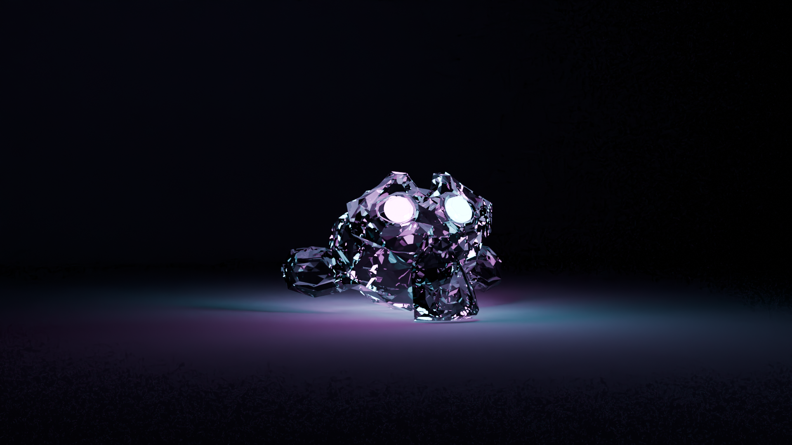

Sources
Pixbay Bilder:
Von der Startseite
ist das Bild von Ariellefisch.
Von der ersten Seite (Blau)
ist das Bild von Insspirito.
Von der vierten Seite (weiss)
Ist das Bild von TanteTati.
Karten wurden von mir in Piskel erstellt.
Bild rechts und Bild von der zweiten Seite (Rot) wurden in Blender gemacht.
Ich mag Aepfel. Wie Sie sehen, brauche ich 8 Sätze pro Seite.